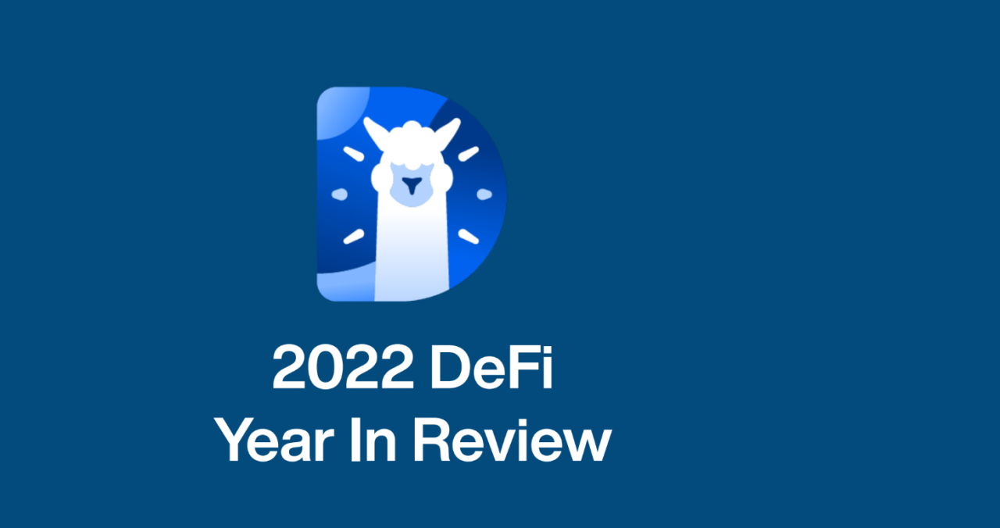

Swap Llama and the Swamp of Payments: My Unexpected Web3 Epiphany
Okay, so picture this: I'm trying to send a friend some crypto for their birthday. Seems simple enough in this brave new Web3 world, right? Wrong. I spent longer wrestling with gas fees and confusing interfaces than I did choosing the actual gift. It felt like trying to navigate a swamp blindfolded while juggling rubber chickens. And that’s where DefiLlama, unexpectedly, became my unlikely hero.
Now, I’m not a hardcore blockchain guru. I’m more of a curious observer, happily wading through the occasionally murky waters of this emerging technology. I'd heard whispers about DeFiLlama, this aggregation site that tracks all sorts of DeFi protocols. I figured it was just another data dashboard—useful, maybe, but not exactly game-changing. Boy, was I wrong.
What really struck me wasn't just the sheer volume of data DefiLlama compiles (seriously, it's impressive – almost overwhelming!), but how it subtly but powerfully underpins the payment infrastructure of Web3. Think about it: Without transparent, readily available data on liquidity, interest rates, and various DeFi protocols, how could anyone confidently send, receive, or even understand crypto payments?

It’s like having a real-time map of the financial swamp I mentioned earlier. Instead of stumbling blindly, you can see which pathways are navigable, which pools are deepest, and which routes might lead to… well, let’s just say less desirable outcomes. DefiLlama allows for informed decisions, reducing the risk of getting stuck with crippling gas fees or accidentally interacting with a scammy protocol.
Of course, it’s not perfect. The crypto world is notoriously volatile, and even the best data aggregators can't predict every twist and turn. I still get a little nervous sometimes, a little hesitant before clicking that "confirm" button, that familiar feeling of slightly terrified excitement before riding a roller coaster. This inherent risk is part of the wild ride, no doubt about it.
But the beauty of DefiLlama, to me, lies in its commitment to transparency. It doesn't shy away from the complexities of DeFi; in fact, it embraces them, organizing the chaos and offering a clearer picture for users. It’s a crucial step toward making Web3 payments more user-friendly, more accessible, less… swamp-like.
I started this article pondering my disastrous crypto birthday gift transfer. Now, I’m reflecting on the unexpectedly vital role of DefiLlama in navigating the burgeoning Web3 payment landscape. It’s not a glamorous role, it's not flashy. But it's quietly, effectively building a better bridge to a more accessible and trustworthy future for crypto transactions. And that, my friends, is pretty darn important. The rubber chickens are still involved, but at least now I have a map.
My Accidental Journey into Swap Llama: Merchant Integrations and the Unexpected Joy of DeFi
Okay, so picture this: I'm sitting here, nursing a lukewarm cup of coffee (yes, I'm a creature of habit, sue me), staring blankly at my spreadsheet. Columns of numbers mock me. My brain, usually a bubbling cauldron of creative ideas, is currently a desolate, dusty plainscape. I'm trying to figure out how to seamlessly integrate decentralized finance (DeFi) – specifically, Swap Llama's swap functions – into a merchant's checkout process. Ambitious, right? Slightly terrifying, maybe? Definitely outside my comfort zone.
I've always been fascinated by the potential of DeFi. The promise of transparent, borderless transactions, free from the shackles of traditional banking…it’s almost utopian, isn’t it? But implementing it in the real world? That's where things get tricky. It's like trying to teach a cat to play the cello – theoretically possible, but requires an incredible amount of patience and probably a lot of catnip.
My initial thought was, "Swap Llama? Sounds like something out of a Harry Potter novel." (My pop culture references are a mixed bag, I admit it). But then I dug in, and I started to see the potential. The idea of offering customers a smoother, potentially cheaper, and more innovative payment method is genuinely exciting. Imagine paying for your artisanal sourdough bread (yes, I have expensive taste) directly with cryptocurrency, avoiding all those pesky transaction fees.
The learning curve, however, was steeper than I anticipated. The documentation, while comprehensive, felt a bit… dense. Like trying to decipher an ancient Sumerian tablet. I spent hours wrestling with API keys, debugging code, and battling the occasional existential crisis related to my overall competence in software development.
There were moments of pure frustration, moments where I wanted to throw my laptop out the window (don't worry, I didn't). But then, there were moments of pure elation. The "aha!" moments when a piece of code finally worked, when I saw the system actually process a transaction… those moments made it all worthwhile.
One thing I've learned through this whole process is that DeFi, while incredibly powerful, isn't some magic bullet. It requires careful planning, meticulous execution, and a healthy dose of patience. It’s not just about slapping a "pay with crypto" button on your website; it's about understanding the nuances of different blockchains, gas fees, and the ever-evolving landscape of regulations.
Integrating Swap Llama specifically posed its own unique challenges. It’s powerful, yes, but it demands a certain level of technical understanding. It's not a plug-and-play solution; you need to know your way around the code. It's like assembling IKEA furniture – the instructions exist, but interpreting them correctly can be… tricky.
So, where are we now? Well, the spreadsheet is still there, staring back at me with its judgmental gaze. But it's less daunting now. I've made progress, and I've learned a lot. And even though I'm still far from a DeFi expert (I mean, let's be realistic, I still accidentally send emails to my mom instead of my boss sometimes), I have a much better understanding of how Swap Llama can benefit merchants. The journey has been a rollercoaster – a bumpy, caffeine-fueled ride through the thrilling world of decentralized finance – but I wouldn't trade it for anything. This isn't just about code; it's about building something new, something that could potentially revolutionize the way we transact. And that, my friends, is pretty damn cool.
Stop Paying Bills Like It's 1999: Recurring Crypto Payments and the Llama That Changed My Life (Maybe)
Okay, so "Llama That Changed My Life" is a bit dramatic. But hear me out. I'm talking about Swap Defi Llama, and how it's quietly revolutionizing – or at least significantly improving – the often-painful process of making recurring crypto payments. Remember setting up automatic payments for your Netflix subscription back in the day? It felt like a miracle, right? Well, that same feeling, but with the added bonus of blockchain tech and a frankly adorable llama mascot (don't judge), is now available for your crypto bills.
Before I get into the technical stuff (because, let's face it, I'm no blockchain wizard), let me paint a picture. I used to pay my crypto hosting fees manually. Every month. It felt archaic. Like paying my phone bill with a carrier pigeon. I’d have to log into my exchange, meticulously check the current price, calculate the exact amount, and then hope I didn't mess up the transaction address. It was stressful! Then, like a digital oasis in the desert of tedious crypto transactions, I stumbled upon Swap Defi Llama.
Initially, I was skeptical. The name itself sounds like something dreamt up by a bored college student fueled by too much coffee and late-night crypto forums. But curiosity, that ever-burning flame in the heart of a tech-enthusiast, won out. And what did I find? A surprisingly user-friendly platform that makes setting up recurring crypto payments almost laughably easy.
It's not just the ease of use, though. There's something profoundly satisfying about automating this previously annoying task. It's the small victories, you know? It’s the quiet triumph of freeing up mental space that was previously occupied by “Did I remember to pay my hosting fees this month?” anxieties. It's the same feeling I get when I finally unsubscribe from a newsletter I never read, only amplified by the fact that it involves cryptocurrency, which, let’s be honest, feels pretty futuristic.
But here’s where things get interesting. I've been thinking a lot about the implications of this. We’re talking about a shift beyond simple convenience. We’re talking about a potential shift in how we interact with the financial world entirely. What if all subscription services – not just those in the crypto sphere – offered recurring crypto payments? Would this accelerate mainstream crypto adoption? Maybe. Would it make my life even easier? Absolutely.
Now, I’m not naive enough to think this is a panacea for all our financial woes. Volatility remains a concern, obviously. And the technical complexities of decentralized finance aren’t exactly disappearing overnight. But platforms like Swap Defi Llama are steadily making these technologies more accessible and user-friendly. They're bridging the gap between the futuristic promise of crypto and the everyday reality of paying bills.
So, where does this leave us? Well, I started this article with a somewhat hyperbolic claim about a llama changing my life. It might be a stretch to say my life has been completely transformed. But I’m undeniably happier, less stressed, and a little more optimistic about the future of recurring crypto payments. And that, my friends, feels pretty darn good. If you’re still struggling with manual crypto payments, seriously, check out Swap Defi Llama. It might just change your life, or at least save you a few minutes of frustration each month. And who doesn't want that?
My Accidental Dive into DeFi Llama's Swap Pool: A Beginner's (Slightly Chaotic) Journey
Okay, confession time. I’m not exactly a DeFi guru. Think more "enthusiastically bewildered newbie" than "crypto wizard." My knowledge of blockchain technology mostly comes from blurry YouTube explainer videos and slightly panicked Google searches. So, when a friend casually mentioned "Swap Defi Llama," I pictured a llama wearing a tiny cowboy hat, somehow involved in a cryptocurrency exchange. I was, of course, wrong. But the reality, it turns out, was even more interesting.
My initial foray into DeFi Llama’s swap functionality felt like navigating a slightly overgrown jungle – beautiful in its complexity, but definitely a bit daunting. I’d heard whispers of its power to swap between different payment tokens, offering potentially better rates than some centralized exchanges. Better rates? Sign me up! The allure of saving a few pennies (or, let’s be honest, a few satoshis) is a powerful motivator, even for someone as financially cautious (read: cheap) as myself.
The first hurdle? Understanding the interface. It wasn't exactly intuitive, at least not to my untrained eye. It looked like a spreadsheet designed by an alien with a penchant for vibrant colours. But after a few minutes of staring blankly at the screen (and a brief existential crisis about my technological incompetence), I started to get the hang of it. Basically, you pick your token, choose the token you want to swap it for, and—voila!—the magic happens. Or, at least, it’s supposed to happen.
Now, here’s where things get a little… messy. I’d chosen to swap a small amount of some obscure token I’d accumulated from a forgotten airdrop (don't judge, we all have those digital dust bunnies). The process seemed simple enough, but then I got hit with a wave of gas fees. Suddenly, the potential savings seemed a lot less impressive. It felt a bit like trying to win a lottery with a ticket that cost almost as much as the prize money. A small part of me wondered if it was all worth the effort. Maybe I should just stick to my traditional banking habits.
But then, the transaction went through. And it worked! My obscure token was magically transformed into something a little more… marketable. The feeling of accomplishment was strangely satisfying. It was like solving a particularly complex Sudoku puzzle, only instead of a numerical victory, I’d achieved a tiny crypto triumph.
Looking back, my experience with DeFi Llama’s swap function wasn’t just about swapping tokens; it was about venturing into a new world. A world that, admittedly, can feel overwhelming and slightly chaotic at times. It’s a world that requires patience, a willingness to learn, and maybe a slightly higher tolerance for risk than I initially possessed.
So, is DeFi Llama the perfect solution for all your token-swapping needs? Maybe not. The gas fees can be a significant factor, and the interface could use some user-friendliness improvements. But my experience, despite the initial confusion and the surprisingly hefty gas fees, was ultimately positive. It opened my eyes to the possibilities of decentralized finance, a world that’s both exciting and a little bit intimidating. And, okay, maybe I did learn something about crypto along the way. Who knew a llama could be so indirectly helpful?
Building Bridges to Decentralized Shopping: My (Slightly Messy) Journey with DefiLlama's APIs
Okay, confession time. I’m not exactly a crypto-bro living off lambos and moon-shots. I'm more of a " cautiously optimistic digital nomad with a penchant for slightly burnt toast" kind of person. But I am fascinated by the potential of decentralized applications (dApps), especially in the e-commerce space. Imagine a world where your online purchases are truly secure, transparent, and – dare I say it – fun? That’s the dream, right?
But building a successful e-commerce dApp isn’t just about coding a slick interface; it’s about the infrastructure, the tools, and, frankly, the sanity-preserving APIs that hold it all together. And that's where DefiLlama came swaggering into my life like a much-needed caffeine shot.
For those unfamiliar (and hey, I was there not so long ago), DefiLlama is basically a treasure trove of decentralized finance (DeFi) data. Think of it as the Yelp of the crypto world, but way more powerful. It provides aggregated data on various DeFi protocols, including – crucially for my e-commerce aspirations – swap information. And access to this data via their APIs? Game-changer.
Initially, I was overwhelmed. The documentation…well, let’s just say it wasn’t exactly a breezy beach read. There were moments where I felt like I was trying to decipher ancient Sumerian cuneiform. (Okay, slight exaggeration, but you get the picture). I wrestled with endpoints, battled with authentication, and even shed a single, dramatic tear at one particularly stubborn error message.
But slowly, painstakingly, I started to see the light. The DefiLlama APIs allowed me to integrate real-time swap data directly into my dApp. This means showing users the best exchange rates for their preferred cryptocurrencies at the checkout, creating a seamless and intuitive shopping experience. This is massive, you know? No more fiddling with multiple exchanges, no more confusing fees – just smooth, decentralized transactions.
Now, I’m not going to lie, there are still challenges. The decentralized nature of things means dealing with varying levels of network congestion and potential fluctuations in gas fees. It's not all sunshine and rainbows, especially when you're trying to keep those transaction costs down for your users. It’s a constant learning curve, a delicate dance between innovation and practicality.
And then there’s the question of user adoption. We're still in the early days of mainstream dApp adoption, and educating users about the benefits of decentralized e-commerce is a crucial piece of the puzzle. It’s like trying to explain the internet to someone in the 1980s – a mix of excitement and bewildered confusion.
But despite the hurdles, my journey with DefiLlama’s APIs has been an incredibly rewarding experience. It's been more than just integrating data; it's been about understanding a new technology, connecting with a vibrant community, and building something – even if it's a tiny piece of the puzzle – that could potentially revolutionize how we shop online.
So, here’s the thing. This article isn’t a technical walkthrough (though I might write one of those later, if you guys are interested!). It's more of a reflection, a glimpse into the messy, imperfect, and ultimately rewarding world of building a decentralized e-commerce future. It’s about finding your way through the code, the documentation, the occasional existential crisis, and emerging on the other side with a newfound appreciation for both DefiLlama and the power of persistence. And maybe, just maybe, a slightly less burnt piece of toast.
Lost in the DeFi Jungle: Navigating Payment Routing with DefiLlama's Help
Okay, confession time. I'm not exactly a DeFi guru. I’m more of a "curious observer with a healthy dose of spreadsheet anxiety." So when I started trying to understand payment routing efficiency in decentralized finance, I felt like Indiana Jones stumbling into a temple filled with cryptic symbols – and potentially very expensive booby traps. The sheer volume of information, the jargon… it was overwhelming. Then I discovered DefiLlama, and honestly, it felt like finding the Ark of the Covenant (albeit a digital one).
But let’s back up. What even is payment routing efficiency in DeFi? Think of it like this: you're sending money to your friend across the country. You could send it directly, but what if there's a faster, cheaper route via a friend in a nearby state? That's essentially what payment routing in DeFi aims to do. It optimizes the path your transaction takes across different blockchains and protocols, hunting for the best combination of speed and low fees.
This sounds simple, right? Wrong. The DeFi landscape is a constantly shifting maze of protocols, each with its own quirks, fees, and potential bottlenecks. It’s like trying to plan the perfect road trip across Europe without GPS – except the road signs are written in a language you barely understand, and some of the roads might just disappear overnight.
Enter DefiLlama. This amazing platform provides aggregated data across various DeFi protocols, giving you a bird's-eye view of the entire ecosystem. Now, I’m no data scientist, but even I can appreciate the power of visualizing data from different chains side-by-side. Seeing the transaction volumes, fees, and even the overall TVL (Total Value Locked) for various protocols helps you grasp the bigger picture. You can start to spot trends, identify potential bottlenecks, and maybe even – dare I say – predict the next big thing. (Please don't hold me to that last part.)
One thing I found particularly useful about DefiLlama is its ability to highlight the "hidden costs" associated with DeFi transactions. It's not just about the gas fees; it's also about the time it takes for the transaction to complete. Sometimes, a seemingly cheaper route might end up costing you more in opportunity cost because of delays. It's a bit like choosing a flight – a cheaper, longer flight with multiple layovers might not always be the best value.
Of course, DefiLlama isn't a magic bullet. The data it provides is only as good as the protocols it tracks. And interpreting that data requires some level of understanding of DeFi mechanics. It’s not going to automatically tell you the perfect routing strategy. Think of it more like a highly sophisticated map; it gives you the information, but the journey, the interpretation, and the decisions are still yours.
Initially, I approached DefiLlama with a level of skepticism, a "show me, don't tell me" attitude. But as I spent more time digging into the data – I started to see the patterns, the potential, the sheer power of having a unified view of the DeFi world. It wasn’t just about numbers; it was about understanding the intricacies of a rapidly evolving ecosystem. It made me appreciate the complexity and ingenuity of the entire decentralized finance landscape.
So, where did this journey leave me? Well, I'm still not a DeFi guru, but I’m definitely more confident in navigating this wild, exciting world. Swap Llama has become an indispensable tool in my arsenal, not just for understanding payment routing efficiency, but for getting a grasp of the broader DeFi ecosystem. And that, my friends, is a valuable takeaway. It's not just about the destination; it's about the journey, and having the right tools to make the journey a bit less treacherous. Now, if you’ll excuse me, I have some more DeFi Llama data to explore. Wish me luck!
QR Codes, Llama Swaps, and My Accidental Dive into DeFi's Wild West
Remember those clunky, early days of the internet, when sharing a file meant burning it onto a CD-R and physically mailing it? Feels ancient, right? Now, imagine trying to send someone cryptocurrency that way. Ridiculous, I know. But that’s kind of the mental image I had before I stumbled into the world of QR code wallets linked to DeFi Llama.
My journey started, as many do, with a misplaced curiosity. I’d been vaguely aware of decentralized finance (DeFi) – this whole "blockchain-based, trustless financial system" thing – but it felt like a complicated, impenetrable fortress guarded by code-slinging dragons. Then I saw it: a shiny QR code promising instant access to, well, something. Something involving DeFi Llama, a website that supposedly tracks all things DeFi. Intrigued, I scanned it.
What followed was a surprisingly smooth (and slightly terrifying) experience. The QR code linked to a wallet, and suddenly, I was staring at a string of cryptic numbers and letters representing… my own little slice of the DeFi pie. Okay, a very small slice, more like a crumb. But still! It was mine. And it felt… empowering, in a weird, slightly unsettling way.
Now, I'm no crypto guru. In fact, my understanding of blockchain technology is probably best described as "vaguely aware." But using a QR code wallet connected to DeFi Llama felt… surprisingly user-friendly. I mean, it’s still slightly arcane, like trying to assemble IKEA furniture while simultaneously deciphering hieroglyphics. But at least the instructions (mostly) made sense.
The real magic, I discovered, is in the swapping. DeFi Llama, in its incredibly helpful (and slightly overwhelming) way, allows you to see the various DeFi protocols and their associated tokens. It’s like a sprawling, ever-changing spreadsheet of financial possibilities. You can essentially swap between different tokens – say, swap some ETH for a slightly more obscure token with a promising future (or an impending crash, who knows!). All through the magic of a QR code and a few taps on my phone.
Here’s where the slight existential dread creeps in. This ease of access, this almost gamified approach to decentralized finance, feels a little…too easy. It's like playing a high-stakes casino game with real money, except the casino is run by algorithms and the rules are constantly shifting. Am I contributing to a revolution in finance, or am I just playing digital roulette? Honestly, sometimes it feels like both.
But even with the inherent risks (and the nagging feeling that I’m probably missing some crucial piece of the puzzle), there's a certain thrill to it. It’s a glimpse into a future where finance is less centralized, more accessible, and possibly a lot more volatile. And while I'm still far from a DeFi expert, using that simple QR code felt like taking a baby step into that future. It wasn't a perfectly smooth walk in the park, but it was definitely an adventure.
So, where does this leave me? Well, I’m still figuring things out, cautiously navigating this new world one QR code at a time. Maybe I'll become a DeFi whiz, maybe I'll lose all my (admittedly paltry) crypto holdings. Either way, I know one thing: that little QR code opened a door to a world I didn't know existed, and that, in itself, is pretty remarkable. And maybe, just maybe, it's a future worth exploring, even if it feels a bit like wandering into a digital Wild West armed with nothing but a smartphone and a healthy dose of skepticism.
The Day I Stopped Hating Gas Fees (Almost) – Thanks, Swap Defi Llama?
Remember that time you tried to send a measly five bucks to your friend, and your wallet screamed at you about "gas fees" eating half your money? Yeah, me too. It felt like paying a toll to enter the digital equivalent of a deserted toll booth – a soul-crushing experience that made me question my sanity, my financial decisions, and the very fabric of the blockchain. I mean, isn't the point of crypto to skip the middlemen and their hefty fees?
But then, like a ray of sunshine piercing through the Ethereum-induced gloom, I stumbled upon Swap Defi Llama. And honestly? My initial reaction was... skepticism. Another DeFi aggregator? Seriously? The internet is already overflowing with them, each promising the moon and often delivering... well, let's just say less than the moon.
However, something about Swap Defi Llama’s focus on gasless payments caught my eye. It felt different. It wasn't just promising lower fees – it was promising to eliminate them entirely. Bold claim, right? I know, I know, I had my metaphorical tinfoil hat firmly in place. I’ve been burned before. This felt too good to be true.
So, naturally, I decided to test it. I picked a small, inconsequential swap – nothing too risky, just a few dollars worth of some random altcoin. The process was surprisingly smooth, almost shockingly so. No confusing interfaces, no intimidating "confirm transaction" buttons that made my palms sweat. It felt… normal. Like sending a text message, not negotiating a treaty with a grumpy, gas-guzzling dragon.
Now, I'm not going to lie – there are still some nuances to it. Understanding exactly how the magic behind gasless transactions works still feels a little bit like trying to decipher an ancient Sumerian tablet. I have this vague understanding involving zero-knowledge proofs and clever contract interactions... but I'm not pretending to be a blockchain guru here. I just know it works (most of the time!).
The key takeaway for me isn't complete technical mastery, but the user experience. And that's where Swap Defi Llama shines. It's not just about the technology; it's about making the whole process accessible. It's about removing a major barrier to entry for newcomers – that dreaded gas fee that often sends people scrambling back to the “fiat world.”
Of course, there are limitations. Not every token or exchange is supported, and there's always a chance (however small) that something might go wrong. But honestly, the convenience far outweighs the potential risks for smaller transactions. It's like using a slightly faster, slightly less reliable mode of transportation – you might experience a minor delay, but you're saving time and money overall.
So, where does this leave me? Well, I'm still not entirely convinced that gasless payments are the utopian future of DeFi – the underlying technology is still evolving and has its own challenges. But I’m definitely a believer in the potential. Swap Defi Llama hasn't solved all of DeFi's problems, but it's made a small, significant step towards making it less frustrating, less intimidating, and – dare I say it – more enjoyable. And that, my friends, is a journey worth celebrating. It's the little victories, right? The small moments of less stress, that actually make a big difference. And for that, Swap Defi Llama, I raise a digital glass of something delicious and (gasless, of course).
The Day I Accidentally Became a Multichain Maestro (Thanks, DeFi Llama)
Remember that scene in "Office Space" where Peter Gibbons finally figures out the TPS reports are meaningless? That's kind of how I felt when I first stumbled onto multichain checkout tools built on DeFi Llama's data. For weeks, I'd been wrestling with a frustrating problem: paying for my adorable, ethically-sourced alpaca-wool socks (don't judge!) across different blockchains. It felt like navigating a medieval trade route, each transaction a perilous journey filled with high gas fees and cryptic error messages. I'd often wonder if it would have been easier to just… knit my own socks.
Then, DeFi Llama appeared, like a digital sherpa guiding me through this bewildering landscape. I know, I know, it’s not exactly glamorous to geek out over blockchain data aggregators. But bear with me! DeFi Llama, for those unfamiliar, acts as a kind of comprehensive, constantly-updated index of decentralized finance protocols. And what I found built on top of its data was a game-changer: multichain checkout tools.
These tools essentially act as a universal translator for crypto transactions. Imagine ordering pizza, but instead of paying with dollars, you're paying with a blend of ETH, BNB, and some obscure token from the Solana network. Sounds insane, right? It was, until I saw how these tools elegantly handled it. They dynamically assess the cheapest and most efficient way to complete your purchase, automatically routing your payment across different chains. It’s like having a hyper-efficient, crypto-savvy financial concierge.
Now, I'm not going to lie. There's a certain… charm to manually swapping tokens on different exchanges. A tiny part of me misses that sense of intrepid exploration, of feeling like a digital Indiana Jones hunting for the perfect bridge between chains. But that nostalgia quickly fades when I remember the hours spent battling gas wars and deciphering incomprehensible transaction IDs.
The real beauty of these multichain tools, beyond the convenience, is the potential for wider crypto adoption. Imagine the average person trying to navigate the intricacies of different blockchains. It's like expecting them to assemble a flat-pack IKEA wardrobe blindfolded. These tools simplify the process significantly, making the entire experience smoother and more user-friendly.
But are they perfect? Nope. Not even close. I’ve had a few hiccups here and there – some minor delays, a slightly confusing interface in one particular tool. And the security aspects are, of course, paramount. You need to be extra careful about which tool you choose, ensuring it’s reputable and audited. It's a wild west out there, so due diligence is your best friend.
The journey of discovering and using these tools has been… enlightening, to say the least. It started with a simple desire to buy some ludicrously expensive alpaca socks and ended with a newfound appreciation for the ingenious solutions emerging in the DeFi space. It's a reminder that even the most complex technological advancements can be harnessed to solve everyday problems, even something as seemingly trivial as buying socks. And honestly, if it can make buying alpaca socks easier, it's probably worth exploring. So, the next time you find yourself wrestling with the complexities of cross-chain transactions, remember the alpaca socks, remember DeFi Llama, and remember there's probably a much easier way to get that ethical wool onto your feet.
The Great Refund Rodeo: Wrangling Cross-Chain Cash with DefiLlama
Okay, so picture this: you're finally snagging that limited-edition Bored Ape Yacht Club PFP – you know, the one with the monocle and tiny top hat? You're buzzing, practically levitating, until… gasp …the transaction fails. Your ETH vanishes into the ether (pun intended, obviously). And the seller? Radio silence. Cue the existential dread. Now, imagine this happening across multiple blockchains. Yeah, not fun.
This, my friends, is why handling refunds in the decentralized finance (DeFi) world feels like trying to herd cats while riding a unicycle. It's wild, chaotic, and occasionally infuriating. But it's also fascinating, and frankly, a necessary skill if you're venturing beyond the friendly confines of a single blockchain.
Enter DefiLlama, a website that's become my unlikely savior in this digital Wild West. I know, I know – another website? But hear me out. DefiLlama isn't just another data aggregator; it's a surprisingly helpful tool for navigating the confusing landscape of cross-chain transactions. It’s like having a slightly grumpy, but ultimately helpful, oracle guiding you through the labyrinth.
Now, I’m not going to pretend I understand the technical mumbo-jumbo behind bridge contracts and wrapped assets. Honestly, half the time I feel like I'm speaking fluent gibberish when I try to explain it to my non-crypto friends. But what DefiLlama does brilliantly is present this complex information in a relatively digestible format. You can check the total value locked (TVL) across different chains, track the price of assets, and even get a sense of the general health of various DeFi protocols – all crucial factors when attempting to get your money back across multiple blockchains.
Think of it as detective work. If a seller's rug-pulled you on Polygon, but they supposedly have a multi-chain presence, you can use DefiLlama to investigate their activity on other chains – maybe they’ve moved their ill-gotten gains to Arbitrum or something. It's not foolproof, of course. It's not a magic spell that conjures your lost ETH back into your wallet. But it gives you a better chance of tracking things down, maybe finding some leverage, or at the very least, knowing when to cut your losses.
The process is often tedious, requiring careful documentation, screenshots, and a fair amount of patience. You'll need to engage with different communities, and be prepared for the possibility that – let's be realistic – you might not get your money back. Sometimes, you just have to accept that this is a risky world, and lessons are often costly.
But here’s the thing: even with the frustrations, the constant learning curve, and the occasional existential crisis triggered by a failed transaction, the potential rewards of DeFi outweigh the risks (for me, anyway). It’s a wild frontier, and DefiLlama, in its own quirky, data-driven way, helps make it a little less terrifying.
This wasn't supposed to be a tutorial on how to use DefiLlama. It wasn't even supposed to be solely about refunds. It was about the messy, human experience of navigating the still-evolving world of decentralized finance. It’s about the frustration, the hope, the detective work, and the sometimes-bitter pill of accepting loss. And if, by chance, you've found yourself in a similar situation, well, you're not alone. We're all still figuring this out together, one chaotic refund request at a time.
The Wild West of Decentralized Payments: My Defi Llama-fueled Journey
Remember the first time you saw a Tamagotchi? That tiny pixelated creature demanding your constant attention? It felt revolutionary, right? Decentralized finance (DeFi) feels a bit like that to me – exciting, chaotic, and occasionally demanding an unholy amount of attention. But unlike my neglected digital pet, DeFi is actually evolving, and a huge part of that evolution is happening with platforms like Swap Defi Llama.
I'll admit, I initially approached DeFi with a healthy dose of skepticism. "Blockchain," "smart contracts," "gas fees"—it all sounded like a tech bro's fever dream. But the potential for truly decentralized, borderless payments? That intrigued me. It felt like a fundamental shift, a potential antidote to the increasingly centralized control over our financial systems.
Swap Defi Llama, for those unfamiliar, is basically a dashboard that gives you a bird's-eye view of the DeFi landscape. Think of it as a financial zoo, except instead of lions and tigers, you have various protocols battling it out for dominance, all vying for your crypto. It displays the total value locked (TVL) in various protocols, making it easier to track which platforms are flourishing and which are... well, struggling to stay alive. It's been invaluable in helping me navigate this often-confusing world.
Initially, I focused on the bigger names – the established players with massive TVL. They felt safer, more stable. But then I started noticing the smaller protocols, the ones bubbling under the surface, the ones often overlooked in mainstream articles. These smaller protocols, often with innovative features and niche applications, are where the real excitement lies. It’s like discovering a hidden gem in a crowded marketplace. Are they risky? Absolutely. But isn't that part of the adventure?
Using Swap Llama, I’ve witnessed firsthand the incredible speed of innovation in this space. Protocols rise and fall with astonishing rapidity. One day, a platform will be riding high, boasting millions in TVL, the next… crickets. It’s brutal, yet fascinating. It's a constant reminder that the DeFi world is still in its infancy, a chaotic wild west where the rules are still being written.
This volatility, though initially daunting, also fosters creativity. Developers are constantly pushing boundaries, experimenting with new technologies and functionalities. It’s a thrilling race, a constant evolution of systems designed to improve efficiency, security, and accessibility. Are we always going to see the next big thing emerging from the DeFi landscape? I really don't know. I've been surprised too many times to make that call with confidence.
And that, perhaps, is the most profound takeaway from my Defi Llama journey. It’s not just about tracking TVL or comparing protocols. It’s about witnessing the raw, unfiltered power of decentralized innovation. It’s about seeing a system evolve, adapt, and constantly reinvent itself, all in real-time. It's messy, uncertain, and yes, occasionally terrifying. But it's also incredibly exciting. Like that Tamagotchi, it demands attention, but unlike that long-forgotten digital pet, it holds the potential to reshape our financial future. And that’s a future I’m eager – slightly apprehensive, but mostly eager – to explore.
tags: DeFi, Swap, DeFi Llama, Web3, Payment Infrastructure, Crypto Payments, Decentralized Finance, Blockchain Technology, Smart Contracts, Web3 Development